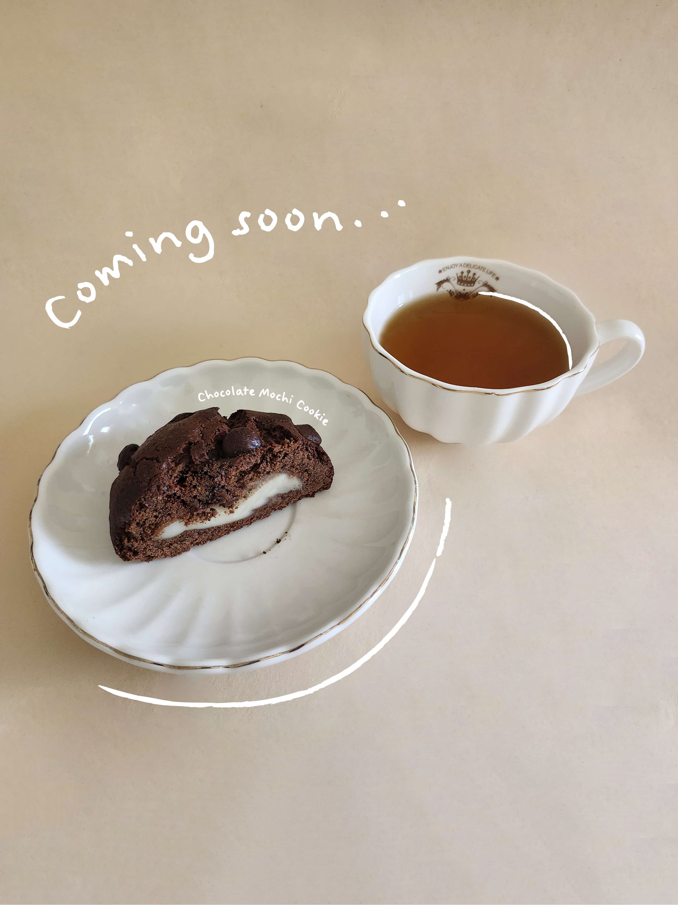

Project Overview
I have a goal of starting a cat cafe in my lifetime, so I wanted to start by creating logos, different cafe layouts, and also hash out the different money streams of my business. This project utilizes the basics of Adobe Photoshop and Adobe Illustrator. Other tools used in this project include: Sims4, ChatGPT
I have always loved cats and cafes. Many cat cafes in the states don’t have as immersive of an experience as the cat cafes in China. From the decoration to the drinks and food, I would love for things to be cat themed. Because of this unsatisfaction, I strive to open a cat cafe with my vision.
Inspiration
.png)
.png)
I‘m largely inspired by cat cafes in East Asia because of how cat-friendly, bright, and welcoming the atmospheres are. Since I love the Ragdoll breed of cats, I wanted to draw a ragdoll cat curled up and sleeping.
I also want to keep my color scheme soft and muted to encourage people to use the cafe thoughtfully to relax, unwind, study, or work. As an artist myself, I find inspiration in being within spaces where artists showcase their art and I understand that the main struggle of artists is not being able to market themselves. For this reason, I want to also inspire and support artists and art lovers.
My Work



By using Adobe suites, I was able to edit and photoshop the cookie photo and also create logos for June Cat Cafe.
.JPG)
.JPG)
.JPG)
.JPG)
.JPG)
What I learned
Learning Adobe programs is hard... But I was able to understand on a basic level. I also uncovered realistic financial numbers behind opening a brick and motor, so I have an idea of how much money I roughly need to pursue this business.